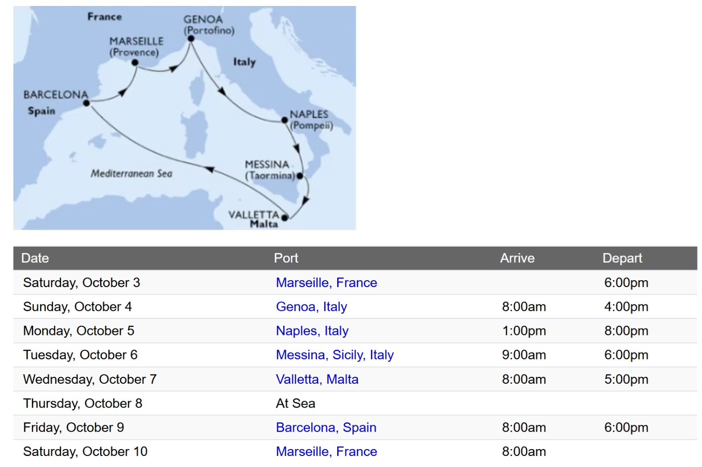

每日靠港行程手冊 ＆ 航程節奏
8 日時間軸
✈️ 國際航班接駁資訊
荷蘭皇家航空 KLM
🛫 去程 · 2026/10/02 (週五)
總時長 17 小時 31 分鐘
23:59
TPE
台北桃園
轉機 1 次 AMS
抵達 10/03 週六
11:30+1
MRS
馬賽普羅旺斯
👑 KLM KL808 · 波音客機
14 小時 16 分鐘
23:59 TPE ➔ 08:15 (+1) AMS 阿姆斯特丹
⏳ 機場轉機中停：阿姆斯特丹 (AMS)
1 小時 15 分鐘
👑 KLM KL1465
2 小時 00 分鐘
09:30 AMS ➔ 11:30 MRS 馬賽 (Terminal 1)
🛬 回程 · 2026/10/10 (週六)
總時長 15 小時 25 分鐘
17:30
MRS
馬賽普羅旺斯
轉機 1 次 AMS
抵達 10/11 週日
14:55+1
TPE
台北桃園
👑 KLM KL1470
1 小時 55 分鐘
17:30 MRS ➔ 19:25 AMS 阿姆斯特丹
⚠️ 緊湊轉機注意：絕對禁止退稅排隊
0 小時 50 分鐘
👑 KLM KL807 · 波音客機
12 小時 40 分鐘
20:15 AMS ➔ 14:55 (+1) TPE 台北桃園
🗺️ 西地中海航行路線圖
航程總計約 1,600 海里。由法國普羅旺斯出發，順時針繞行地中海，途經利古里亞海、第勒尼安海、抵達西西里島與馬爾他，最後橫跨公海至伊比利半島。

航程距離參考 (海里 NM)
🛳️ 馬賽 ➔ 熱那亞：約 200 NM
🛳️ 熱那亞 ➔ 拿坡里：約 360 NM
🛳️ 拿坡里 ➔ 墨西拿：約 170 NM
🛳️ 墨西拿 ➔ 瓦萊塔：約 150 NM
🛳️ 瓦萊塔 ➔ 巴塞隆納 (含海上日)：約 620 NM
🛳️ 巴塞隆納 ➔ 馬賽：約 180 NM
🏛️ 靠港城市歷史縮影
地中海是西方文明的搖籃。在抵達這 6 座千年古城前，先來了解她們的歷史底蘊：
法國 · 馬賽 (Marseille)
建城於西元前 600 年
法國最古老的城市。由來自小亞細亞的古希臘水手所建立，當時被稱為「馬薩利亞 (Massalia)」。歷經兩千多年的地中海貿易洗禮，成為融合北非、南歐與法國普羅旺斯風情的多元文化大熔爐。
代表符號：伊夫堡、馬賽魚湯、馬賽香皂。
義大利 · 熱那亞 (Genoa)
中世紀最強大的海上共和國之一
「La Superba (傲慢之城)」，中世紀與威尼斯齊名的海洋霸主，也是探險家哥倫布的故鄉。16 世紀此處聚集了全歐洲最富有的銀行家，在市中心打造了華麗無雙的羅利宮殿群 (Palazzi dei Rolli)。
代表符號：羅利宮殿、羅勒青醬 (Pesto)、哥倫布。
義大利 · 拿坡里 (Naples)
西元前 470 年的新城 (Neapolis)
曾被古希臘、羅馬帝國、諾曼人、西班牙波旁王朝輪番統治，保留了極度豐厚的歷史層次與奔放的南義市井氣息。一旁的龐貝古城更在西元 79 年因維蘇威火山爆發而被瞬間封存。
代表符號：瑪格麗特披薩、維蘇威火山、龐貝古城。
義大利 · 墨西拿 (Messina)
西西里島的門戶
自古希臘時期即為扼守海峽的軍事與商業咽喉。歷經 1908 年歐洲史上最慘重的大地震與海嘯摧毀，城市幾乎奇蹟般地按原貌重建。鄰近的陶爾米娜 (Taormina) 則保留了壯麗的古希臘懸崖劇場。
代表符號：天文鐘樓、古希臘劇場、埃特納火山。
馬爾他 · 瓦萊塔 (Valletta)
由騎士團建立的堅固堡壘
建城於 1565 年「馬爾他大圍攻」擊退鄂圖曼土耳其帝國之後。由聖約翰醫院騎士團大團長讓·德·瓦萊特親自奠基，整座城市建於堅硬的石灰岩半島上，被譽為「由紳士為紳士打造的城市」。
代表符號：騎士團盔甲、馬爾他十字、卡拉瓦喬。
西班牙 · 巴塞隆納 (Barcelona)
加泰隆尼亞的驕傲
從羅馬時代的殖民地 (Barcino) 發展至今。舊城哥特區保留了迷宮般的中世紀街道，而 19 世紀的「擴展區」則成為高第 (Gaudí) 等現代主義建築大師揮灑奇幻創意的畫布。
代表符號：聖家堂、波浪建築、Tapas 與海鮮燉飯。
🧳 航前準備與全航程錦囊
✅ 出發前數位與文件準備
下載 MSC for Me App
登船連上內網即可預約劇場秀、SPA與查詢帳單。
下載 Sagrada Família App (聖家堂)
巴塞隆納入內必備，供查驗電子票與聆聽語音導覽。
護照正本 (效期 > 6 個月) ＆ 影本 3 份
正本將於登船時由郵輪收走保管。岸上觀光請務必隨身攜帶「紙本護照影本」作為身分與退稅證明（手機照片不可靠）。
列印並綁定 MSC 行李條
出發前列印並釘牢於 6 件大托運行李把手上。
👗 衣物與鞋履必備清單
貼身衣物與襪子 (12-14 套)
船上手洗不易乾，洗衣費高，帶足全航程數量最省事。
正式服裝 Dress Code (1 套)
為 Day 6 船長晚宴準備：男士西裝/皮鞋，女士洋裝或禮服。
包覆肩膝的服裝
參訪馬爾他大教堂與羅馬天主教堂時的強制規定。
防滑厚底運動鞋
龐貝古城與歐洲石板路極需避震，嚴禁薄底或高跟鞋。
防風薄外套
早晚甲板海風強勁，採洋蔥式穿法應對 15°C~25°C 溫差。
⚠️ 旅程保命與防呆注意事項
• 隨身防竊警告：南歐港口（尤其是拿坡里、巴塞隆納）為扒手熱區。隨身包與背包請一律「前背」，手機切勿插在後口袋。
• 實體信用卡與小額歐元：船上綁定及岸上交通多支援 Tap & Go，但仍需備妥 €20 左右的零錢，用於購買街頭小吃或部分舊式設施。
• 飛航模式：郵輪離港進入公海後，務必將手機切換至「飛航模式」並僅連線船上 Wi-Fi，以免誤連高額的衛星海事漫遊網路。
• 回程轉機極度緊湊 (Day 8)：荷航在阿姆斯特丹 (AMS) 轉機僅有 50 分鐘。在馬賽機場與 AMS 轉機時，**絕對禁止排隊辦理退稅**，否則極大機率錯過返台班機！